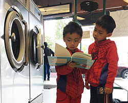
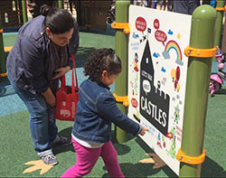
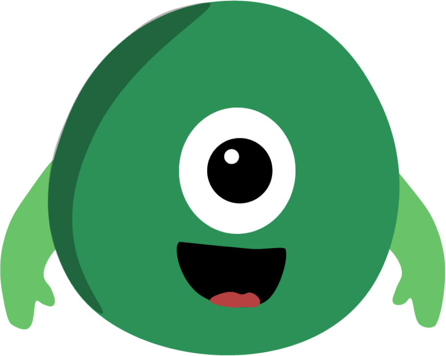
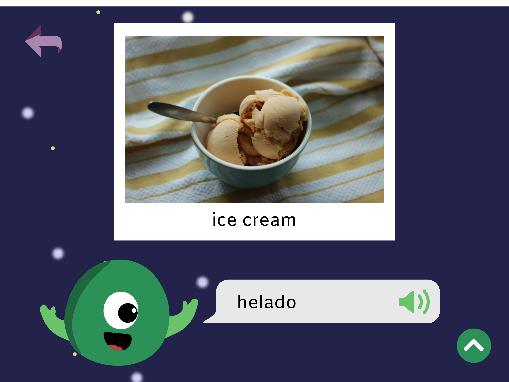

Cyrus
Duration: 9 hours
Project Type: Hackathon Project
Team Members: Reine Abubakar, Stefanie Choi, & me
My Role: UX Designer
Tools: Illustrator, Figma, InVision
Skills: Ideation/Sketching, Prototyping
Awards: Won "Best Overall" for WINFO's 6th Annual Hackathon with over 70 teams competing. More info here!
Problem Space
By age three, children from low-income families hear up to 30 million fewer words than children from higher income families, which puts them at a learning disadvantage before they even enter the classroom (sources 1, 2). Researchers have coined the term "word gap" to describe this situation. Children who experience this "word gap" were more likely to perform worse on vocabulary and language development tests. This affects future academic performance, which is why we wanted to address education inequality as early as possible.
Current Solutions
Too Smart to Fail is a campaign between Next Generation and the Clinton Foundation that funds research on child brain development and early learning. They are also trying to spread awareness about the "word gap" and are encouraging parents to read to their children more. While in office, Obama also tried to address the "word gap" through his Early Learning Initiative.
 Too Smart to Fail has partnered with laundromats and playgrounds to increase access to books and learning opportunities.
Problem Statement
Many low-income parents are often too busy to read to their children. The solutions above require children to be in certain locations to have access to these opportunities. Having access to a tablet with apps designed for learning would increase learning opportunities for children. Although tech ownership is low in low-income families, plenty of libraries have tablet lending programs, which is why we thought it would be best to design our app for tablets.
Prototyping
Through our research, we decided we would need to focus on three things:
- Being kid friendly and designed for children before they enter school (ages 0-5)
- Making our app engaging
- Making it educational
To make it kid friendly, our team member Reine designed our mascot Cyrus the Cyclops that would greet the user and guide them along the way. Having a tablet as opposed to a smart phone is also more kid friendly because the larger screens are easier for kids who are still developing their motor skills.
Cyrus the Cyclops
To make it engaging, we wanted to use utilize cool and novel technology to make things more interesting. We decided we would use an image recognition service (possibly Google Vision API) so children could take pictures of objects and learn how to spell and pronounce them. Here is the camera portion that Stefanie designed:
Camera function in our app
Image recognition once a picture is taken
We also have an option for learning an additional language if the child is growing up around multiple languages. We created rewards for learning a certain amount of words or completing a certain amount of challenges as another way to encourage children to learn.

To make it educational, I came up with 3 different game modes: a scavenger hunt, a spelling game, and a vocab game. At first, we only planned to have the image recognition feature for learning words, but we realized that some children might have limited access to many objects. So in our scavenger hunt, a child would be able to learn about different types of objects they might not have around their home. I also decided a spelling game and vocab game would be helpful in reinforcing words that they scanned or discovered in the scavenger hunt and camera.

Different game modes
Challenges
We struggled at first to come up with a solution to the "word gap" because low-income families don't always have access to phones or tablets, but once we realized that many libraries have tablet lending programs, we knew that designing for tablets would make our solution more accessible than a phone or a computer would. The time constraint was also a bit of a challenge. We weren’t able to test out our prototype or do more in-depth research.
Reflection
This was my first hackathon, and I didn't go in with any high expectations. But in the end, I was really happy with what we came up with, even though there are still things I would've liked to improve. If we had more time, I’d want to do some more research on effective ways of learning vocabulary. Because we didn't have much time for research, we weren't able to research what type of learning is most effective for increasing vocabulary. Instead, we just chose games based on our personal experience with learning vocabulary. Check out our final prototype here!